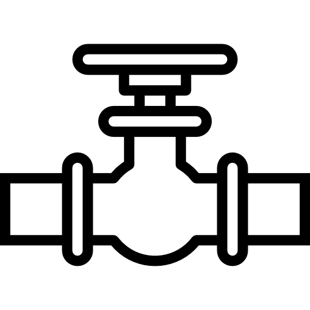
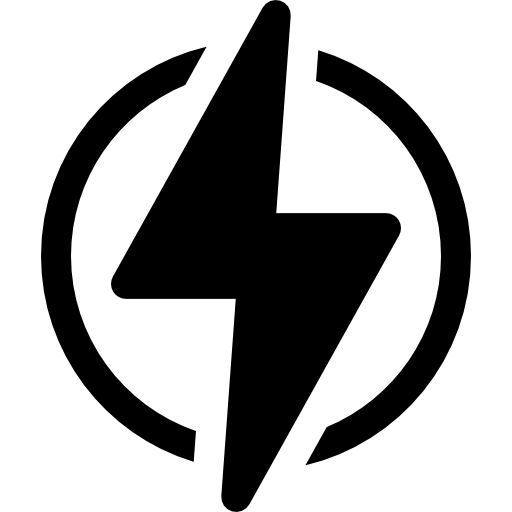
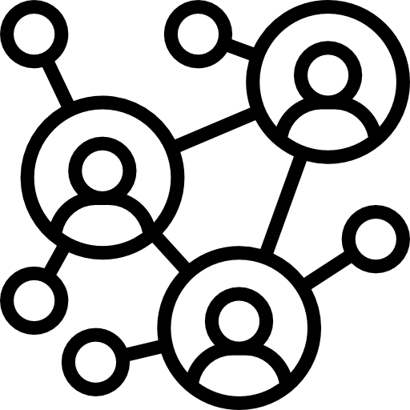
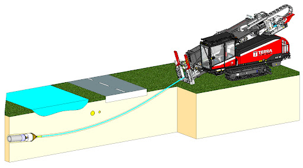
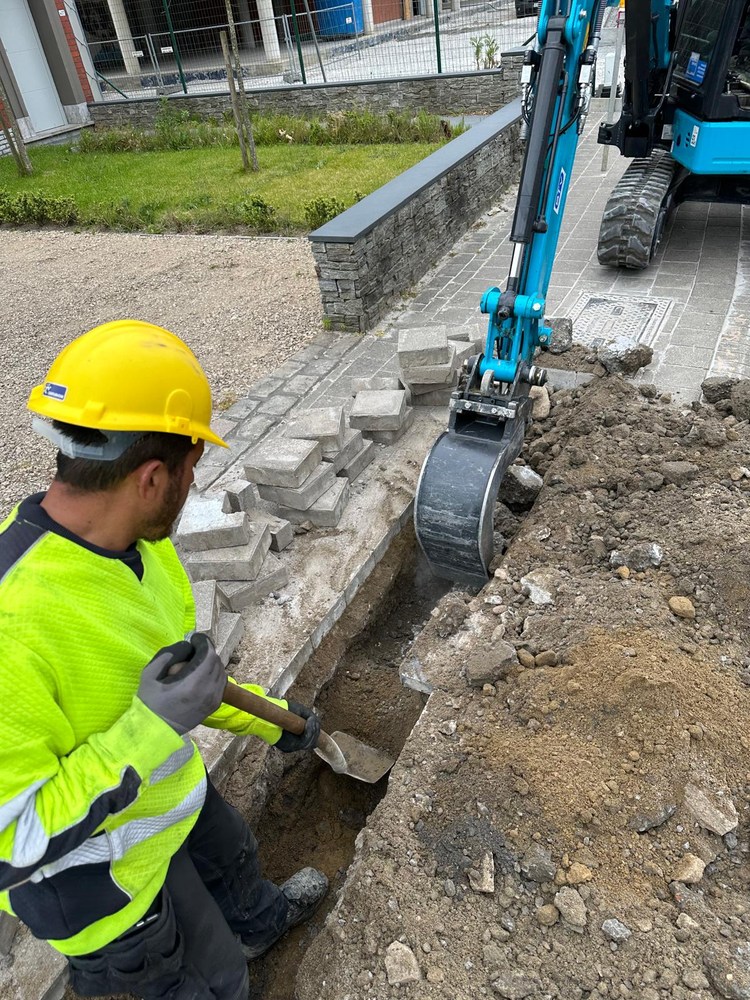

Wat we voor jou kunnen doen
Al deze werken voeren we uit met een gestuurde boring of met klassieke graafwerken, afhankelijk van wat je project vraagt.
Leidingen
Drinkwater
Waterleidingen, snel en efficiënt aangelegd.

Aardgas
Aardgasleidingen, veilig en milieuvriendelijk aangelegd.

Pers- en rioolleidingen
Zonder het wegdek of terrein open te breken.
Kabels

Elektriciteit
Elektriciteitskabels van elk type, vlot gelegd zonder opbraak.

Telecom
Kabels voor internet, tv en andere communicatie, snel en netjes getrokken.
Gestuurd boren
hoe werkt het?
Met een gestuurde boring leggen we leidingen en kabels onder wegen, gebouwen en waterlopen door, zonder sleuven te graven.
- 1
Bodemonderzoek
We brengen de samenstelling van de grond en mogelijke obstakels in kaart.
- 2
Technische tekeningen
We tekenen het boortraject nauwkeurig uit. Op vraag maken we een prebuilt (voorontwerp) ter verduidelijking of goedkeuring.
- 3
Pilootboring
We boren eerst een gestuurd pilootgat langs het geplande traject.
- 4
Ruimen
Het boorgat wordt verbreed zodat de HDPE-buizen erdoor passen.
- 5
Intrekken
De leiding of kabel wordt door het boorgat getrokken.
- 6
As-built
Na afloop bezorgen we het as-builtplan van de boring.


Graafwerken
hoe gaan we te werk?
Waar graven nodig is, graven we machinaal of met de hand, veilig gesignaleerd en netjes afgewerkt.
- 1
Grondanalyse
We brengen de bodemgesteldheid en mogelijke obstakels in kaart.
- 2
Plannen en tekenen
We bepalen de graafdiepte en de nodige veiligheidsmaatregelen.
- 3
Afbakenen en signalisatie
De graafzone wordt afgebakend volgens plan, met duidelijke signalisatie. We volgen zowel de wettelijke als onze eigen, strikte veiligheidsregels.
- 4
Graven
Machinaal en, waar nodig, met de hand.
- 5
Afwerken
We egaliseren en herstellen het terrein en voeren alle materialen milieuvriendelijk af.
Geïnteresseerd?
Vraag vrijblijvend een offerte aan. We bekijken graag samen met jou wat je project nodig heeft.